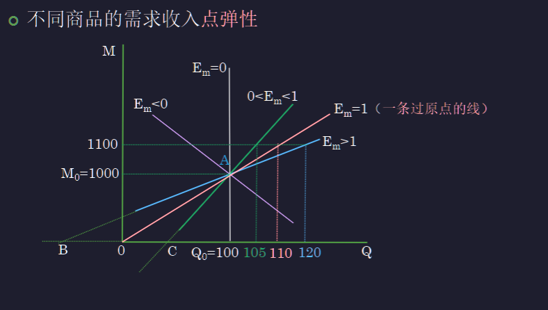

Chap.01 需求、供给和均衡价格
第一节 需求¶
约 4888 个字 预计阅读时间 12 分钟
一、需求的概念¶
- 需求量
- 基本特征：购买意愿和购买能力
- 需求量=实际的购买量（若供给能够满足）
- 注意：需求量是需求者的意图之量，无从观察，不同于购买量
- 需求：在其他条件不变的情况下，消费者对一种商品的需求为某一特定时期内消费者在各种可能的价格下愿意并且能够购买的该商品的数量
- 与需求量的区别：需求是一条曲线，需求量是具体的数量（坐标）
- 需求的表示
- 需求表
- 需求曲线（图像）一条向右下的曲线，一般都以价格为纵坐标
- 需求函数 \(Q^d=\alpha -\beta P\) 注意：这是反斜截式，\(\beta\) 不是需求曲线的斜率
二、需求规律¶
（一）需求规律的含义¶
- 需求定律：在其他条件不变的情况下，需求量和价格之间呈反方向变动的关系
- 如果消费者对一种商品的需求满足需求规律，则
- 需求曲线向右下方倾斜
- 需求曲线斜率为负值 \(Q^d(P)'<0\)
- 需求函数中 \(\beta>0\)
为什么要出口质量更好的商品？
出口需要一定的运费，而质量更好的商品价格更高，叠加运费之后的价格增加更不明显 如同外卖运费涨价之后，人们更愿意点贵的东西
（二）需求曲线的特例¶
- 垂直的直线：无论价格多高，需求保持相对不变，如一户家庭的每月食盐需求，但是完全刚性的需求并不存在
- 水平的直线：消费者对于价格变动极为敏感，价格稍微升高之后需求为 0，稍微下降之后为无穷大
- 向右上方倾斜：价格越高，需求越高
- 可能是出于炫耀的目的，又比如消费者更信任价格高的珠宝
- 被称为吉芬物品，一般都是低档品
- 饥荒的时候，虽然土豆价格上涨，但是其他食物可能涨得更高，所以土豆的需求量增加
- 这并不违反需求定律，因为消费者认为购买的行为更值得
三、影响需求量的其他因素¶
- 消费者的偏好
- 不吸烟的人和吸烟的人对烟草需求差别很大
- 对需求进行讨论时，通常假定消费者偏好保持不变
- 消费者的收入水平
- 低档品和正常品
- 正常品：收入水平增加，需求量增加
- 低档品：收入水平增加，需求量减少
- 低档品和正常品的区分因人而异，低档品不等于劣等品
- 低档品和正常品
- 其他相关商品的价格
- 替代品：两种商品满足同种或相近的需求，完全替代品替代比例固定
- 替代品价格上升会导致消费者对原商品需求量上升
- 互补品：两种商品搭配使用满足某种需求，完全互补品搭配比例固定
- 互补品价格下降会导致消费者对原商品需求量下降
- 替代品：两种商品满足同种或相近的需求，完全替代品替代比例固定
- 消费者预期：对于未来的价格预期、收入预期
- 政策及其他因素：政府的政策可以通过影响偏好、收入、相关品价格和预期来影响消费者的需求量
- 另外还有广告和直播带货、新闻、自然条件等
四、需求量的变动和需求的变动¶
- 需求量的变动是商品自身价格的变动造成的消费者愿意并能购买的商品数量的变动，曲线上点的移动
- 需求的变动是其他因素变化时，需求（需求曲线、价格和需求量组合）的变动，曲线的左右移动，不是上下
- 需求量变动不能影响价格，需求变动才能影响价格
需求->价格->需求量
需求还是需求量？
宣传禁烟，需求变动
香烟加税，需求量变动
五、从单个消费者需求到市场需求¶
- 私人物品，市场需求曲线是单个消费者消费曲线的水平加总
- 公共物品，市场需求曲线是单个消费者消费曲线的竖直加总
- 如一场表演，每个人门票的价格加起来是市场支付的价格，但仍然是一场演出
- 也就是，多个消费者一起消费，但所需的总量仍然不变
- 市场需求也一定满足需求规律，需求曲线也向右下方倾斜
第二节 供给¶
一、供给的概念¶
- 供给量是指特定价格下生产者愿意且能够提供的某种物品的数量
- 强调供给意愿和供给能力
- 供给意愿：对价格满意
- 供给能力：已经生产出来，或者能立即开始生产
- 供给量=实际的消费量
- 强调供给意愿和供给能力
- 供给：在其他条件不变的情况下，生产者在某一特定时间内在各种可能价格下愿意并且能够供给的某商品的数量
- 供给的表示
- 供给表
- 供给曲线 向右上方的曲线
- 供给函数 \(Q^s=\gamma+\delta P\,\,(\delta>0)\)
二、供给规律¶
（一）供给规律的含义¶
- 供给规律：在其他条件不变的情况下，某种商品价格越高，生产者的供给量越高
- 价格升高，企业扩大生产（企业规模）
- 价格升高，市场有前景，更多企业入局（企业数量）
（二）供给曲线的特例¶
- 垂直的直线：价格浮动但供给量不变，如容易烂的新鲜菜肉，总要卖完
- 水平的直线：供给量改变价格不变，比如景区里的小商品店，或具有既有生产能力且单位成本稳定的公司（参考课本 P 54）
三、影响供给量的其他因素¶
- 生产成本，生产成本增加，利润相应减少，若商品价格不变，生产者会减少供给量，比如工厂生产要考虑能源价格
- 生产者的目标 比如推出性价比产品来获得企业声誉
- 生产技术水平：技术水平越高，产量越大，相应供给越高，如智能手机十几年的发展
- 生产者可生产的其他相关商品的价格
- 资源竞争：A 涨价，B 价格不变，则生产要素转向 A，B 供给减少；如玉米和大豆
- 资源共享：A 涨价，B 价格不变，生产要素转向这一产线，B 供给也增加；如汽油和煤油
- 生产者对未来的预期：如预期未来价格上涨，则减少当下供给来囤积商品
- 政府的政策：如税收、优惠、补贴
- 自然条件：如水果蔬菜
预期产品价格会下降对供给的影响
一方面，未来价格要下降，现在肯定需要抛售，短时间供给增加
另一方面，未来价格下降，会降低产量，长时间来看供给可能减少
四、供给量的变动和供给的变动¶
同 [[#四、需求量的变动和需求的变动|需求量的变动和需求的变动]]，供给量的变动是曲线上点的移动，供给的变动是曲线的整体移动
五、从单个生产者的供给到市场供给¶
同 [[#五、从单个消费者需求到市场需求|从单个消费者需求到市场需求]]，水平加总
第三节 市场均衡¶
一、均衡价格和均衡数量¶
- 市场均衡：市场需求等于市场供给的状态
- 需求价格、供给价格及均衡价格和数量
- 需求价格\(P_d\)：消费者购买一定商品愿意支付的最高价格
- 供给价格\(P_s\)：供给者销售一定商品愿意接受的最低价格
- 均衡价格\(P_e\)：市场出清 \(Q_e=Q_d=Q_s\) 的价格，此时 \(P_e=P_d=P_s\)
市场均衡下价格的变动¶
- 过剩或超额供给：只要有 surplus，供给者会下调价格，需求缺口减小，直到价格高度回到平衡点
- 短缺或超额需求：只要有 shortage，供给者会增长价格，供给缺口减小，直到价格高度回到平衡点 短缺不是稀缺，不是物以稀为贵
- 使用直线解析式求解交点，就能找到均衡价格和数量
二、市场均衡的变动-比较静态分析¶
分析步骤¶
- 确定事件导致供给还是需求的移动
- 确定移动的方向
- 说明如何改变均衡价格和数量
几个简单规律¶
- 供给不变，需求增加，均衡价格和数量都上升，vice versa
- 需求不变，供给增加，均衡价格下降，数量上升，vice versa
- 供给和需求同时增加
- 均衡数量增加
- 如果需求增加更快，均衡价格上涨，如电子产品；反之，均衡价格下降，如粮食和衣服
- vice versa
使用图像进行案例分析
进口关税提高进口商品成本，导致其价格上升；价格上升后消费者需求减少，于是价格下降？
价格上升之后改变了供给，消费者需求减少到市场均衡点，之后价格不会下降
分析吉芬商品：以饥荒时期的土豆为例
一方面，饥荒土豆供给减少；另一方面，其他商品供给减少幅度更大，或涨价幅度更大，人们对土豆的需求增长。
最后，供给曲线左移，需求曲线右移，需求量减少且价格上涨。
[[微观02 1-供求理论.pdf]]
第四节 弹性¶
一、弹性的概念¶
- 弹性：衡量买者或卖者对市场条件变化（如价格）的反应程度
- 弹性系数：(\(弹性系数=因变量的变动百分比/自变量的变动百分比=\frac{\Delta y}{y}/\frac{\Delta x}{x}\)\)
- 为什么用百分比？*因为单位可以消掉，而且归一化
二、需求价格弹性¶
$$ E_d=\frac{\Delta Q/Q}{\Delta P/P}\,\,\,\,需求量比上价格 $$ - \(E_d\) 可能是负数，一般取绝对值 - \(E_d\) 越大，需求的弹性越大，需求对价格更敏感
需求弹性的计算¶
- 两种弹性计算方式
- 点弹性：选定起始点很重要，在不同点计算一般会获得不一样的弹性 一般用于对某个点分析
- 弧弹性：指需求曲线上两点之间的弹性，取两点之间的中点为单位一，从两侧开始计算结果相同 一般用于对一段过程分析
- \(E_d=点与原点连线的斜率/需求的斜率=点到Q轴长度/点到P轴长度\)
- 对于线性需求，点与原点连线的斜率越大，弹性越大；需求曲线越平缓，弹性越大
- 线性需求曲线上每一点的斜率相同，但是弹性不同，同种商品价格不同弹性不同
- 与 P 轴交点，弹性趋于无穷，价格越高，弹性越大
- 与 Q 轴交点，弹性趋于 0，价格越低，弹性越小
- 曲线中点处弹性为 1
- 非线性需求取切线来计算
需求弹性的影响因素¶
- 大类商品的弹性小 如衣服弹性比牛仔裤弹性小
- 替代品多的商品弹性小 如牙膏比早餐面包弹性小
- 必需品的弹性小 如药品弹性小，游艇弹性大
- 一般认为长期需求弹性更大 如长期汽油，短期可能找不到替代
- 一般占消费支出少的商品弹性小 比如笔涨价感觉没什么影响，笔记本电脑涨价感觉有较大影响
不同弹性的需求曲线（全都用弧弹性计算）¶
- \(E_d=0\) 理想刚性需求，垂直线
- \(0<E_d<1\) 缺乏弹性，需求量变动幅度小于价格变动幅度，比较陡峭的直线
- \(E_d=1\) 单位弹性，需求量变动幅度等于价格变动幅度，比如反比例函数
- \(E_d>1\) 富有弹性，需求量变动幅度大于价格变动幅度，平缓的曲线，比如海鲜
- \(E_d\rightarrow\infty\) 完全弹性，水平直线
总收益与价格需求弹性¶
总收益：价格*数量 相当于矩形面积
- 需求缺乏弹性：价格上升将导致总收益增加，增加到需求曲线中点时收入最大
- 需求富有弹性：价格上升将导致总收益减少，降低到需求曲线中点时收入最大，比如打折出售的弹性商品
薄利多销，谷贱伤农
一些商品富有弹性，适当降价可以增加总收益；
一些商品缺乏弹性，产量增大平衡价格降低时，总收益反而减少
如胰岛素涨价，收益增加；游轮降价，收益也增加
毒品犯罪问题
禁毒，由于本身毒品需求弹性较小，禁毒导致毒品价格上升，毒品犯罪收益会更大，短期内可能无效；但是长期来看价格上涨减少了新吸毒者，是有效的
禁毒教育，降低了需求，更加有效
三、需求收入弹性¶
- \(E_m>0\) 正常品
- \(E_m>1\) 奢侈品
- \(0<E_m<1\) 必需品
- \(E_m<0\) 低档品
需求收入弹性的计算¶

- 过原点的线弹性为 1，越平缓弹性越大，经过比较就可知道弹性是多大
eg
Qs=c+dP, c>0, d>0
则 P 为 0 时，Q 大于 0，弹性在 0 到 1 之间
四、需求交叉价格弹性¶
- 替代品，大于零 稀饭的价格上升，豆浆的需求增加
- 互补品，小于零 如，一种商品价格变化时，和另一种商品的需求量同增同减
- 无关品，等于零
五、供给弹性¶
- 用于衡量供给者的供给量对价格的敏感度
影响因素¶
- 取决于卖者改变他们生产的物品量的灵活性
- 口罩的短期与长期供给 时间——企业规模和企业数量
- 布洛芬和芯片 技术类型与生产周期
- 布洛芬增产很快，芯片则不然
- 炼油厂供给量的多少 闲置生产力，进入壁垒
不同弹性的供给曲线¶
- 完全无弹性 海滨资产
- 缺乏弹性 短期食品
- 单位弹性
- 单位弹性
- 富有弹性
- 完全弹性 完全竞争市场，所有厂家一起定价的情况
谷贱伤农
供给增加，需求不变，均衡点来到单位需求弹性以下
此时，如果供给弹性更小，即供给曲线更陡峭，对农民的损失越大
[[微观02 2-弹性理论.pdf#page=42&selection=2,0,2,9|ppt的图片解释]]
[[微观02 2-弹性理论.pdf#page=43&selection=2,0,4,12|为什么 OPEC 不能保持石油的高价格？]]
石油的价格短期能够上升很快，长期则不能？
短期的石油需求和供给缺乏弹性，长期需求与供给富有弹性
长期来看，由于需求富有弹性，有的国家有降价的意愿，难以维持合作关系
这也是一般的规律
[[微观02 2-弹性理论.pdf#page=44&selection=2,0,2,22|微观02 2-弹性理论, page 44]]
六、蛛网模型——市场均衡变动的动态分析¶
- 蛛网模型：有一定生产周期的产品的价格和产量失去均衡时的市场波动
- 基本假设
- 市场上有众多的生产者，单个生产者产量的任何改变都不会影响市场价格
- 本期的需求取决于同期的价格 \(Q^d_t=f(p_t)\)
- 本期的产量取决于上期的价格 \(Q^s_t=f(p_{t-1})\)
- 均衡条件：所有的量都相等时达到均衡
蛛网模型求解¶
- [[微观02 2-弹性理论.pdf#page=48&selection=2,0,38,4|求解均衡条件]]
- [[微观02 2-弹性理论.pdf#page=49&selection=2,0,2,6|求解动态均衡调整]]
蛛网模型的类型¶
[[微观02 2-弹性理论.pdf#page=51&selection=0,0,0,6|微观02 2-弹性理论, page 51]]
- 收敛蛛网模型
- 需求曲线的斜率<供给曲线的斜率
- 需求曲线的弹性>供给曲线的弹性
- 等幅波动蛛网模型
- 需求曲线的斜率=供给曲线的斜率
- 发散蛛网模型
- 需求曲线的斜率>供给曲线的斜率
- 需求曲线的弹性<供给曲线的弹性
第五节 供求分析的应用事例¶
一、政府价格干预¶
支持价格¶
[[微观02 2-弹性理论.pdf#page=54&selection=0,0,0,6|微观02 2-弹性理论, page 54]]
政府为了支持某些行业发展而规定的，高于均衡价格的最低限价，政府可能收购过剩供给
最低工资法的影响
会导致供过于求，导致一部分低收入人群失业 [[微观02 2-弹性理论.pdf#page=56&selection=2,0,4,1|微观02 2-弹性理论, page 56]]
限制价格¶
[[微观02 2-弹性理论.pdf#page=58&selection=2,0,2,4|微观02 2-弹性理论, page 58]]
- 政府为了限制某些产品的价格上涨而对该产品规定的低于均衡价格的最低价格
- 价格限制后，长期的缺口比短期更大
为什么票贩子屡禁不止
限制价格使得需求大于供给
而在这个供给量下，消费者实际有更高价购买的意愿，所以票贩子有收入空间
二、税收效应分析¶
- 税收转嫁：纳税人在缴纳税收后，通过提价或压价方式，将部分或全部税收 转移给别人负担的过程
- 税收归宿：税收转嫁后所形成的负担分配结果
向消费者征税¶
- [[微观02 2-弹性理论.pdf#page=61&selection=2,0,4,6|微观02 2-弹性理论, page 61]]
- 需求曲线下移
- 实际上是消费者和生产者共同承担的税赋
向生产者征税¶
- [[微观02 2-弹性理论.pdf#page=64&selection=2,0,4,6|微观02 2-弹性理论, page 64]]
- 供给曲线上移
- 买卖双方共同承担
结论¶
- 无论是对买者征税还是对卖者征税，税收归宿是一样的
税收归宿的影响条件¶
- 税收归宿和向谁征税无关，和弹性大小有关
- [[微观02 2-弹性理论.pdf#page=68&selection=0,0,0,7|微观02 2-弹性理论, page 68]]
- 需求弹性比较小，买者承担多
- 供给弹性比较小，买者承担多
- 弹性大的一方，损失就比较小，vice versa
奢侈品税的问题 [[微观02 2-弹性理论.pdf#page=71&selection=0,0,0,9|微观02 2-弹性理论, page 71]]
奢侈品的需求价格弹性很高
游艇供给短期缺乏弹性
所以供应商承担大部分的税负
补贴效应分析 [[微观02 2-弹性理论.pdf#page=73&selection=2,0,2,3|微观02 2-弹性理论, page 73]]
同样，与补贴谁没有关系
同样，弹性小的补贴多
本章总结¶
第一小节¶
- 需求与需求量，需求函数与需求曲线，需求规律，影响需求的其他因素
- 正常品与低档品
- 替代品与互补品价格对需求的影响
- 供给与供给量，供给规律，供给函数与供给曲线，影响供给的其他因素
- 如何从个人需求与供给推导市场需求与供给（方程式），及市场均衡的求解
- 需求（供给）函数的斜率与需求（供给）曲线的斜率
- 需求（量）与供给（量）变动，市场均衡的变动
第二小节¶
- 弹性与需求曲线的斜率
- 需求弹性与收入
- 正常品与低档品的需求收入弹性，替代品与互补品的需求交叉价格弹性
- 供给弹性
- 谷贱伤农的经济学分析，判断蛛网模型是否收敛和发散
- 支持价格和限制价格
- 供求弹性与税收归宿